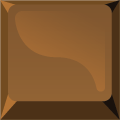

<!DOCTYPE html>
<html dir="rtl" align="right"></html>
<html>
<head>
   <meta charset="utf-8">
   <title>2022-FR-06-chocolate-bars</title>
   <script>
      window.stringsLanguage = 'ar';
   </script>
   <script class="remove" type="text/javascript" src="../../../_common/modules/pemFioi/importModules-1.1_M.js" id="import-modules"></script>
   <script class="remove" type="text/javascript">
      var modulesPath = '../../../_common/modules';
      importModules([
         'jquery-1.7.1', 'jquery-ui.touch-punch', 'raphael-2.2.1', 'JSON-js', 'grid-1.1',
         'beav-1.0', 'beaver-task-2.0', 'simulation-2.0', 'raphaelFactory-1.0',
         'delayFactory-1.0', 'simulationFactory-1.0', 'raphaelButton-1.0',
         'platform-pr', 'installationAPI.01', 'miniPlatform',
         'randomGenerator-1.0', 'responsiveDOMConverter','fonts-loader-1.0', 'loader-buttonsAndMessages'
      ]);
   </script>
   <script type="text/javascript">
      var respEnabled = Beav.Navigator.supportsResponsive();
      // var respEnabled = false;
      if(respEnabled){
         importModules(['buttonsAndMessages_resp','taskStyles-0.3_M']);
         window.FontsLoader.loadFonts(['fontawesome']);
         task.getMetaData = function(cb) { cb({nbHints: 0, autoHeight: true}); }
      }else{
         importModules(['buttonsAndMessages','taskStyles-0.1']);
      }
   </script>
    
   <script class="remove" type="text/javascript">
    var json = {
       "id": "http://castor-informatique.fr/tasks/2016/2016-FR-01-not-rectangles/",
       "language": "en",
       "version": "en.01",
       "authors": "Idea: Mathias Hiron; Design: Arthur Charguéraud, Mathias Hiron, Marielle Léonard; Implementation:    Arnaud Le Grand",
       "translators": [],
       "license": "CC BY-SA 3.0",
       "taskPathPrefix": "",
       "modulesPathPrefix": "",
       "browserSupport": [],
       "fullFeedback": true,
       "acceptedAnswers": [],
       "usesRandomSeed": false
   };
   </script>
   <script type="text/javascript">
   var taskStrings = {
         introTitle: "المهمة المطلوبة",
         success: "تهانينا، لقد نجحت!",
         tooManyMeasures: " لقد وجدت البندق، لكنك استخدمت الكثير من الأسئلة.",
         partialSuccess: " لقد وجدت البندق، لكن كان بالإمكان أن تجده باستخدام عدد أقل من الأسئلة.",
         doMeasuresFirst: function(level) {
		     str = "قبل وضع العلم، اختر ";
			 if (level == "easy") {
				str += "منطقة";
			 } else {
			    str += "بعض المناطق";
			 }
			 str += " كي تكتشف مكان حبة البندق";
			 return str;
	     },         
         clickRetry: " اضغط على البدء من جديد كي تحاول مرة أخرى.",
         undo: "تراجع",
         count: " كم عدد  \nحبات البندق؟",
         newMeasure: " اختر مناطق  \nجديدة", // غير مستخدم?
         select: " أظهر الإجابات السابقة",
         dragMarker: " قم بجر هذا العلم للمربع \n الذي يحتوي على \n حبة البندق الإضافية.", 

         nuts: function(nbNuts) { 
			var str = "حبة من البندق";
			if (nbNuts > 1) {
				str += " ";
			}
			return str;
		 },
         measCounter: function(val,target) {
            return val+"  عدد الأسئلة المطروحة";
         },
         countResult: function(val,rect) {
            var col = (rect == 0) ? " الزرقاء "  : " البرتقالية ";
			var plural = "";
			if (val > 1) {
				plural = " ";
			}
            return val+" حبة/حبات من البندق" + plural + " في "  + " المنطقة"+ col;
         },
         missingRect: function(nbRect) {
            var plural = (nbRect > 1) ? " " : "";
            return " يجب أن تختار عدد  "+nbRect+" من المناطق"+plural+" في كل قالب من الشوكولاتة."
         },
         tooManyMeas: function(max) {
            return " لا يمكنك أن تطرح عدد أكبر من  "+max+" أسئلة."
         },
         errorNoResult: "<p> لم تقم بطرح أي سؤال.</p>",
         errorWrongPos: "<p> قالبي الشوكولاتة متطابقين عدا المربع المحاط باللون الأصفر، هذه ليست القطعة التي وضعت عليها العلم.</p><br/>"
      };
	  var enableRtl = true;
   </script>
   <script type="text/javascript" src="task.js"></script>
   <style>
      #paper *:not(.overlay) {
         touch-action:  none;
      }
      #error {
         min-height: 2em;
         text-align: center;
      }
      #displayHelper_graderMessage {
         color: red;
         font-weight: bold;
      }
      img {
         -webkit-user-drag: none;
      }
      </style>
</head>
<body>
   <div id="task">
      <h1>البندق</h1>
      <div id="tabsContainer"></div>
      <div id="taskContent">
         <div id="zone_1">
            <p class="basic medium hard">قم بإيجاد الفرق بين قالبي الشوكولاتة.</p>
			<p class="easy"> قالب الشوكولاتة المغلف يشبه تماماً القالب غير المغلف، إلا أنه يحتوي على حبة بندق واحدة إضافية.</p>
			<p class="easy"> كي تجده، قم بطرح بعض الأسئلة: اختر المنطقة، ثم اضغط على  "كم عدد حبات البندق؟"</p>
            <p class="medium hard">لكل سؤال، حدد  <span class="basic easy medium"> منطقة </span><span class="hard"><b> منطقتين </b></span> على كل قالب شوكولاتة، ثم اضغط على الزر الأزرق.</p>
               <span class="hard"> من الممكن أن تتداخل المنطقتين. </span>
			<center class="easy medium hard"></center>
			<p> عندما تتأكد بالفعل أي قطعة شوكولاتة تحتوي على حبة البندق الإضافية، ضع العلم عليها، ثم اضغط  على تحقق.</p>
            <p class="easy medium hard"> للحصول على جميع النقاط،  <strong> حاول أن تقوم بالحل باستخدام عدد <span id="target"></span> من الأسئلة.</strong></p>
         </div>
         <div id="zone_2">
            <div id="paper"></div>
            <div id="error"></div>
         </div>
         
         
         
         
         
         
         
         
         
         
      </div>
   </div><!-- task -->
   <div id="solution">
      <h2>الحل</h2>
      
      <!-- <h2>C'est de l'informatique !</h2>-->

  </div> <!-- task-solution -->
</body>
</html>
